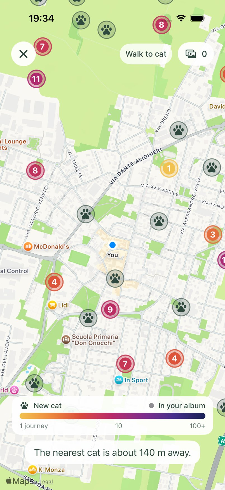
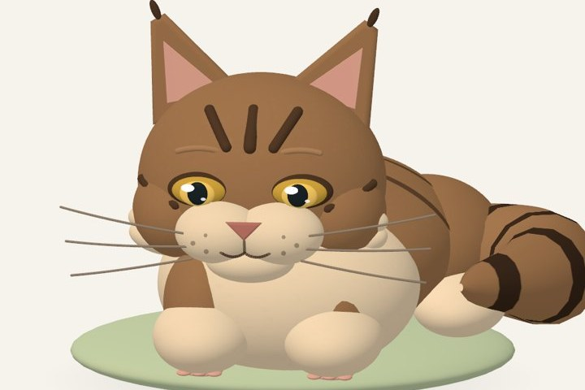
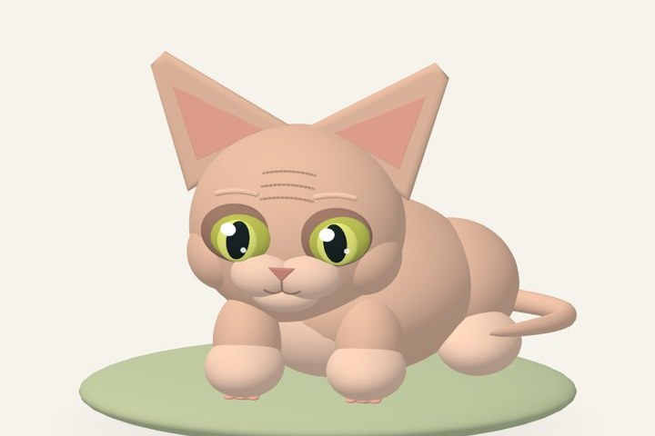
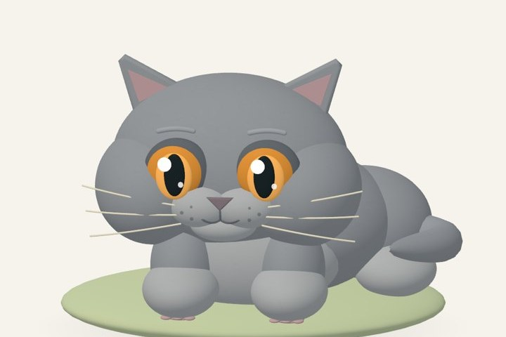

Olive
Cat no. 4,812,307
Common
- Concorezzoadopted
- Milanadopted
- Lisbonadopted
- Tamarindoadopted
- Kyotoadopted
23,187 km so far
An example. Olive, her number and her journey are made up to show the idea.
Twenty-one million cats wander slowly across the real map. Walk to find one, call it with your voice and meet it in your own room. Adopt it and give it a name that never changes. One day set it free, and someone else can adopt it.
iPhone first. Android will follow.
An example: how a cat called Olive might travel. Each stop is a person who adopted her, kept her a while and set her free again. Her passport counts every kilometre.
A cat that is set free stays in the world, waiting for its next home.
The cats move slowly across the real map. You find them by walking.
If you allow it, your phone tells you when a cat is within about 100 metres, even with the app closed.
Use your voice. Call out loud, and the cat hears you.
Point your camera at the floor and there it is. Take a photo if you like; it stays on your phone.
Give it a name. The name never changes, and it is written next to the cat's number in the register of all 21,000,000 cats.
Leave it somewhere new. It stays in the world, someone else can adopt it, and its passport keeps counting the kilometres.


There are 21,000,000 cats, and there will never be more. Each one has its own number and a look that exists only once.







Every cat belongs to one of six levels of rarity. The number of cats at each level is fixed.
Every cat carries a passport. It records the places and dates of its adoptions, and counts the kilometres it has travelled from one home to the next.
You can keep two cats for free. The Nomad Pass, $14.95 a year, makes room for up to fifty.
Olive
Cat no. 4,812,307
Common
23,187 km so far
An example. Olive, her number and her journey are made up to show the idea.
The app is in testing. Leave your email and we will write once, on the day it opens.